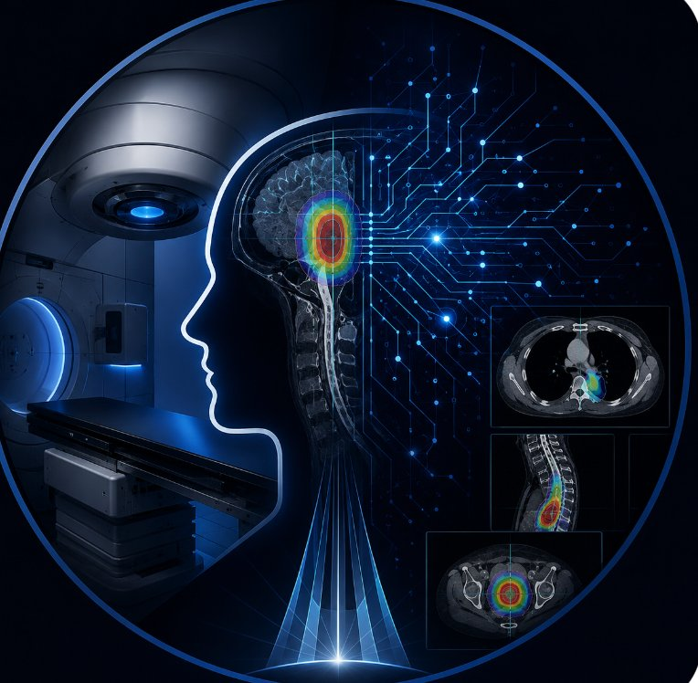
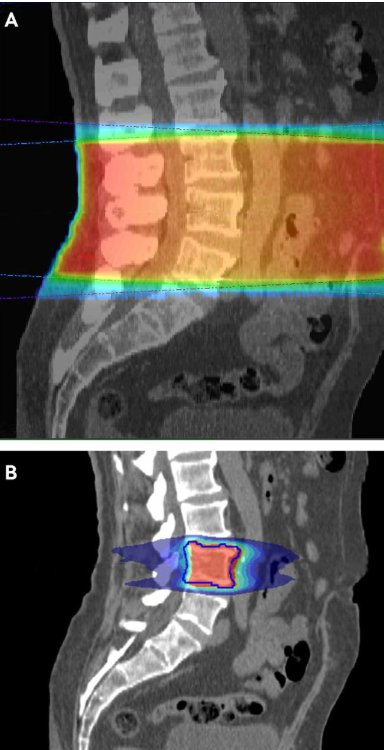

I am a Radiation Oncologist with a clinical and academic interest in evidence-based radiotherapy, patient-centred cancer care, and the responsible use of artificial intelligence in oncology.
My interest is not in replacing clinical judgement, but in exploring how digital tools and AI can support safer, clearer and more efficient cancer care.
A professional resource for patients, colleagues, and anyone interested in radiation oncology and evidence-based cancer care.
AI should augment, not replace, clinical judgement. Its safest role is as a structured assistant for information retrieval, drafting, checking, summarising and prompting clinicians to consider overlooked risks.
Evidence matters more than hype. Patient safety and clinical context remain essential.
Read My Position ↗